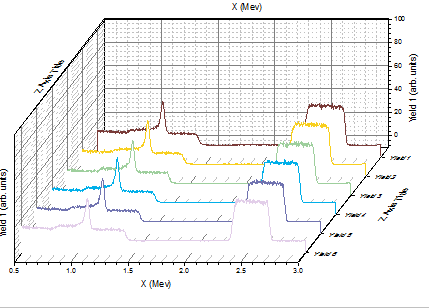

Überblick über die benutzerdefinierte Anpassung
Customizing-Graph
Zusammenfassung
Die Bearbeitung Ihres Origin-Diagramms ist sehr einfach. Jedes Diagrammelement kann ausgewählt und seine Eigenschaften können auf dem entsprechenden Dialog geändert werden. Tatsächlich können Sie Ihre Grafik bis auf den kleinsten Datenpunkt benutzerdefiniert anpassen.
Dieses Tutorial zeigt Ihnen, wie Sie:
- die Größe eines Layers verändern,
- einen Layertitel hinzufügen,
- eine Vorlage benutzerdefiniert anpassen und speichern,
- Achsen benutzerdefiniert anpassen,
- ein Diagrammdesign anwenden,
- die Zeichenreihenfolge in einem Layer ändern,
- einen Punkt benutzerdefiniert anpassen,
- ein Gruppendiagramm benutzerdefiniert anpassen,
- ein Wasserfalldiagramm mit Farbabbildung erstellen.
Größe eines Layers ändern
- Öffnen Sie Customizing Graphs.OPJ im Ordner \Samples\Graphing und wählen Sie den Ordner Resize Graph and Customize Symbol im Projekt Explorer.
- Aktivieren Sie Graph2 und klicken Sie mit der rechten Maustaste innerhalb des Layers oberhalb der Datenpunkte und wählen Sie Layertitel hinzufügen/ändern in dem sich öffnenden Kontextmenü. Fügen Sie einen Titel hinzu, wie im Diagramm unten gezeigt:
- Die Größe des Layers kann grafisch ganz einfach durch Ziehen an den Elementen für die Größenveränderung verändert werden. Um dies zu tun, klicken Sie einmal in den Layer, aber nicht auf einen Datenpunkt. Der Layer wird, wie unten zu sehen, ausgewählt, und sie können an einem der 8 Ankerpunkte ziehen, um die Layergröße zu verändern. Hinweis: Wenn Sie die Strg-Taste beim Ziehen gedrückt halten, bleibt das Seitenverhältnis erhalten.
- Sie können den Dialog Details Zeichnung auch dazu verwenden, die genauen Zahlen festlegen, um die Layergröße exakt vorzugeben. Klicken Sie zum Öffnen des Dialogs Details Zeichnung doppelt in den Layer. Gehen Sie zur Registerkarte Größe und Performance und legen Sie den Layerbereich auf die im Bild gezeigten Werte fest:
| Hinweis: Aktivieren Sie das Kontrollkästchen Achsenlänge mit Skalierung mit Verhältnis X:Y verknüpfen, um das Längenverhältnis von X- und Y-Achsen (die Breit und Höhe des Layerrahmens) festzulegen, so dass das Seitenverhältnis der tatsächlichen X- und Y-Skalierungen beibehalten wird, wenn sich die Layergröße ändert. Sie können Ihren eigenen Wert für das Verhältnis im folgenden Feld festlegen. |
Datenzeichnung und Achsen benutzerdefiniert anpassen
In diesem Abschnitt zeigen wir Ihnen, wie die Farbe einer Datenzeichnung und die Eigenschaften der Achsen geändert werden.
- Klicken Sie auf einen der Datenpunkte von Graph2, um die gesamte Datenzeichnung zu markieren, und ändern Sie dann die Farbe der Datenpunkte mit Hilfe der Schaltfläche Linien-/Rahmenfarbe auf der Symbolleiste Stil in Rot.
- Zum benutzerdefinierten Anpassen der Achsen verwenden Sie dann den Dialog Achsen. Klicken Sie doppelt auf die X-Achse, um den Dialog zu öffnen, und legen Sie folgende Optionen fest:
- Wählen Sie das Symbol Horizontal auf der Registerkarte Skalierung aus. Wählen Sie für den Typ unter Große Hilfsstriche die Option Nach Anzahl und geben Sie 5 als Anzahl ein.
- Wählen Sie das Symbol Vertikal auf der Registerkarte Skalierung aus und setzen Sie von auf 0, bis auf 16. Der Typ für Große Hilfsstriche ist Nach Anzahl. Geben Sie 11 für Anzahl ein.
- Gehen Sie zur Registerkarte Linie und Hilfsstriche und wählen Sie sowohl die Seite Oben als auch Rechts aus, wobei Sie die Strg-Taste gedrückt halten. Aktivieren Sie das Kontrollkästchen Linie und Hilfsstriche zeigen, um die Linie und die Hilfsstriche für die obere X- und rechte Y-Achse zu zeigen. Klicken Sie auf OK, um diese Einstellungen anzuwenden und den Dialog Achsen zu schließen. Das Diagramm sollte folgendermaßen aussehen:
Vorlage speichern und erneut verwenden
In diesem Abschnitt zeigen wir Ihnen, wie Sie das obenstehende Diagramm als eine Vorlage speichern und wieder verwenden.
- Wählen Sie im Menü Datei: Template speichern unter... (alternativ können Sie mit der rechten Maustaste auf den Titel des Diagrammfensters klicken und Template speichern unter... im Kontextmenü wählen) und geben Sie der Vorlage den Namen MeineDiagrammvorlage. Klicken Sie dann auf die Schaltfläche OK, um sie zu speichern.
- Erstellen Sie eine neue Arbeitsmappe und importieren Sie die Datei \Samples\Curve Fitting\Sensor2.dat über Daten: Mit Datei verbinden: Text/CSV. Markieren Sie Spalte B und wählen Sie Zeichnen: Meine Vorlagen: MeineDiagrammvorlage, um ein Diagramm zu erstellen.
Das Diagramm sollte folgendermaßen aussehen:
| Beachten Sie, dass Sie auch das Hilfsmittel Stapelzeichnen verwenden können, um mehrere Diagramme aus unterschiedlichen Arbeitsblättern/Arbeitsmappen mit der gleichen Datenstruktur gleichzeitig zu erstellen. Wie dieses Hilfsmittel funktioniert, erfahren Sie in diesem Tutorial. |
Diagramm mit Hilfe eines Designs ändern
Origin speichert die Eigenschaften eines Diagramms in einer Designdatei. In diesem Abschnitt erfahren Sie, wie Sie ein Diagramm mit Hilfe eines Designs benutzerdefiniert anpassen.
- Wählen Sie bei aktivem Graph3 im Menü Einstellungen: Designs verwalten, um den Dialog zu öffnen. Wählen Sie das Design Times New Roman Font aus und klicken Sie auf Jetzt anwenden. Wählen Sie Ticks All Out und klicken Sie auf Jetzt anwenden. Klicken Sie dann auf die Schaltfläche Schließen, um den Dialog zu schließen. Das Diagramm sollte dem Bild unten entsprechen:

- Kopieren Sie die Formatierung des aktuellen Diagramms und fügen Sie sie in Graph2 ein. Klicken Sie mit der rechten Maustaste rechts neben den Layer auf den leeren weißen oder auch grauen Bereich und wählen Sie Format kopieren: Alle Stilformate. Aktivieren Sie dann Graph2 und klicken Sie mit der rechten Maustaste auf eine ähnliche Stelle und wählen Sie Format einfügen. Graph2 sollte dann wie im Bild unten aussehen:

Zeichenreihenfolge
Sie können die Datenzeichnungen neu ordnen, entweder mit Hilfe des Dialogs Layerinhalt, der Objektverwaltung oder des Dialogs Diagrammeinstellungen.
Öffnen Sie die Projektdatei Customizing Graphs.OPJ im Ordner \Samples\Graphing und wählen Sie den Ordner Plotting Order im Projekt Explorer.
Mit Dialog Layerinhalt
- Aktivieren Sie das Diagrammfenster Graph 1. Klicken Sie zum Öffnen des Dialogs Layerinhalt doppelt auf das Symbol Layer 1 in der oberen linken Ecke.
- Klicken Sie auf die Schaltfläche >>, um das linke Feld auszublenden. Wählen Sie im rechten Bedienfeld das Liniendiagramm Gauss Fit Count aus. Klicken Sie auf die Schaltfläche mit dem nach unten weisenden Pfeil, um das Liniendiagramm in der Zeichnungsreihenfolge nach unten zu verschieben.
- Klicken Sie auf die Schaltfläche Anwenden. Das Liniendiagramm Gauss Fit Count befindet sich jetzt oberhalb des Säulendiagramms. Klicken Sie dann auf die Schaltfläche Schließen, um den Dialog zu schließen.

Mit Objektverwaltung
- Aktivieren Sie erneut das Diagramm Graph 1. Erweitern Sie die Objektverwaltung, die standardmäßig auf der rechten Seite des Origin-Arbeitsbereichs angedockt sein sollte, indem Sie mit Ihret Maus über die Leiste der Objektverwaltung fahren.
- Klicken Sie mit der rechten Maustaste auf das Liniendiagramm Gauss Fit Count, um im Kontextmenü Nach oben verschieben auszuwählen und diese Zeichnung aufwärts zu bewegen.
- Sie sehen dann, dass die rote Linie sich hinter dem Histogramm befindet.

Mit Dialog Diagrammeinstellungen
- Verwenden Sie die gleichen Daten wie im vorherigen Beispiel. Gehen Sie zu dem Ordner Plotting Order und aktivieren Sie Graph 1. Wählen Sie Grafik: Setup Diagramm im Hauptmenü, um den Dialog Diagrammeinstellungen zu öffnen (Sie können auch mit der rechten Maustaste auf Layer 1 klicken und Setup Diagramm auswählen).
 |
Um alle drei Bedienfelder im Dialog Diagrammeinstellungen anzuzeigen, erweitern Sie bitte das Bedienfeld Diagrammtyp, indem Sie auf  klicken, und erweitern Sie das Bedienfeld Verfügbare Daten, indem Sie erneut auf klicken. klicken, und erweitern Sie das Bedienfeld Verfügbare Daten, indem Sie erneut auf klicken.
Bitte lesen Sie unter Mit Hilfe des Dialogs Diagrammeinstellungen zeichnen weitere Informationen zu diesem Thema.
|
- Ziehen Sie im Bedienfeld der Diagrammliste das Liniendiagramm unter das Säulen-/Balkendiagramm.
- Klicken Sie auf OK und Sie können sehen, dass die rote Kurve nun darüber angezeigt wird. Beachten Sie, dass die neue Zeichnungsreihenfolge auch in der Legende wiedergegeben wird.

Punkte benutzerdefiniert anpassen
In diesem Abschnitt erfahren Sie, wie Sie einen einzelnen Datenpunkt benutzerdefiniert anpassen.
- Dabei arbeiten Sie weiterhin im Ordner Plotting Order. Stellen Sie sicher, dass Graph 1 aktiv ist. Beachten Sie, dass alle Spalten ausgewählt sind, wenn Sie auf eine der Säulen klicken. Klicken Sie erneut, um nur diese eine Säule auszuwählen. Setzen Sie dann die Farbe mit Hilfe der Schaltfläche Füllfarbe
 auf der Symbolleiste Stil auf Grün.
auf der Symbolleiste Stil auf Grün.
- Sie können auch den Dialog Details Zeichnung verwenden, um eine einzelne Säule benutzerdefiniert anzupassen. Halten Sie die Strg-Taste gedrückt und klicken Sie doppelt auf eine der Säulen, um den Dialog Details Zeichnung zu öffnen. Die Einstellungen in diesem Dialog beeinflussen die Eigenschaften von nur diesem einzelnen Datenpunkt. Beachten Sie, dass die Indexnummer für diesen ausgewählten Datenpunkt im linken Bedienfeld des Dialogs Details Zeichnung markiert ist. Legen Sie die Gruppe Gradientenfüllung wie folgt fest, um die Säule mit einem Farbgradienten von Gelb zu Rot zu füllen.
Das Diagramm sollte dem Bild unten entsprechen:

- Sie können ein Segment eines Kreisdiagramms auf die gleiche Weise benutzerdefiniert anpassen. Gehen Sie zum Ordner Edit Single Data Point und aktivieren Sie das Kreisdiagramm. Halten Sie die Strg-Taste gedrückt und klicken Sie doppelt auf eines der Segmente, um den Dialog Details Zeichnung zu öffnen. Setzen Sie auf der Registerkarte Muster das Füllmuster in der Auswahlliste auf Dicht und die Musterfarbe auf Rot. (Alternativ können Sie auch einmal auf das Segment klicken und dann noch einmal, um nur diesen einen Punkt auszuwählen und ihn dann mit Hilfe der Symbolleiste Stil benutzerdefiniert anzupassen.) Das Diagramm sollte folgendermaßen aussehen:

- Sie können einen einzelnen Datenpunkt benutzerdefiniert anpassen und ihn mit einer Anmerkung versehen. Gehen Sie zurück zum Ordner Resize Graph and Customize Symbol. Drücken Sie die Strg-Taste und klicken Sie doppelt auf eines der Punktdiagramme, um den Dialog Details Zeichnung zu öffnen. Klicken Sie auf der Registerkarte Symbole auf die dreieckige Schaltfläche der Vorschau, um die Symbolgalerie zu öffnen, und wählen Sie dann die Kugel aus. Erhöhen Sie die Größe auf 18 und klicken Sie auf die Schaltfläche OK, um den Dialog zu schließen.
- Jetzt können Sie das Hilfsmittel Anmerkung verwenden, um X- und Y-Werte hinzuzufügen, die Ihrem benutzerdefiniertem Datenpunkt entsprechen. Wählen Sie die Schaltfläche Anmerkung in der Symbolleiste Hilfsmittel (Hinweis: Die Hilfsmittel Datenkoordinaten, Anmerkung und Datencursor sind gruppiert angeordnet). Wenn Sie das Hilfsmittel Anmerkung nicht sehen können, klicken Sie auf den Pfeil unten rechts von dem jeweilig sichtbar angezeigten Hilfsmittel auf der Symbolleiste).
Verschieben Sie den Anmerkungscursor zu dem benutzerdefinierten Datenpunkt und klicken Sie doppelt darauf. Origin fügt automatisch ein Textobjekt hinzu. Drücken Sie auf die ESC-Taste oder klicken Sie auf die Schaltfläche Zeiger, um das Hilfsmittel Anmerkung zu deaktivieren. Klicken Sie einmal auf das Textobjekt und ziehen Sie es in die entsprechende Position. Es wird automatisch eine Linie gezeichnet, die den Punkt mit der Beschriftung verbindet.

Klicken Sie mit der rechten Maustaste auf das Textobjekt und wählen Sie Eigenschaften, um den Dialog Anmerkung - Text zu öffnen. Sie können dann das Format der Textbeschriftung in diesem Dialog benutzerdefiniert anpassen. Geben Sie auf der Registerkarte Text im Bearbeitungsfeld %(1,@LL)=$(Y,.2)�%(1,@LU) ein. Außerdem stellt die Schaltfläche  rechts vom Bearbeitungsfeld einige der häufig verwendeten Notationen und Beispielsyntax zur Verfügung.
rechts vom Bearbeitungsfeld einige der häufig verwendeten Notationen und Beispielsyntax zur Verfügung.
|
Seit Origin 2017 können Sie Anmerkungsbeschriftungen von Punkt zu Punkt ziehen. Klicken Sie auf die Schaltfläche Zeiger  , drücken Sie die ALT-Taste und verwenden Sie das Fadenkreuz, um die Beschriftung zu einem anderen Datenpunkt zu ziehen. , drücken Sie die ALT-Taste und verwenden Sie das Fadenkreuz, um die Beschriftung zu einem anderen Datenpunkt zu ziehen.
|
Gruppendiagramme
Bisher haben Sie Datenpunkte in einer einzigen Datenzeichnung benutzerdefiniert angepasst. In diesem Abschnitt zeigen wir Ihnen, wie Sie ein gruppiertes Datendiagramm benutzerdefiniert anpassen.
- Wählen Sie den Ordner Grouped Data. Book3 ist aktiv. Markieren Sie dann das gesamte Arbeitsblatt und klicken Sie auf die Schaltfläche Linie
 auf der Symbolleiste 2D-Grafiken, um ein Liniendiagramm zu erstellen.
auf der Symbolleiste 2D-Grafiken, um ein Liniendiagramm zu erstellen.
- Klicken Sie doppelt auf die X-Achse, um den Dialog der Achsen zu öffnen. Legen Sie die Werte auf Von = 0,5 und Bis = 3,0 fest. Wählen Sie dann die Option Fest in der Auswahlliste Neu skalieren aus (dazu müssen Sie in der Liste nach oben scrollen). Auf diese Weise können sich die Werte in Von und Bis beim Neuskalieren nicht ändern. Klicken Sie auf OK, um diese Einstellungen anzuwenden.
- Klicken Sie doppelt auf einen leeren Bereich im Layer über den Liniendiagrammen, um den Dialog Details Zeichnung zu öffnen. Wählen Sie auf der Registerkarte Stapeln die Option Auto in der Gruppe Versatz. Klicken Sie auf OK, um den Dialog zu schließen.
- Wählen Sie Grafik: Neu skalieren. Die Y-Skalierung des Diagramms skaliert sich automatisch neu, während sich die X-Skalierung nicht ändert, da die Option auf Fest gesetzt wurde. Verändern Sie die Größe des Layers und ziehen Sie die Legende an die gewünschte Stelle.

- Klicken Sie auf eine der Zeichnungen, um die gesamte Gruppe auszuwählen, und verwenden Sie dann die Schaltfläche Linien-/Rahmenfarbe auf der Symbolleiste Stil, um die Farben zu ändern. Klicken Sie auf die Registerkarte Nach Zeichnungen und wählen Sie Q03 Rainbow7 aus der Inkrementliste wie unten.
- Wählen Sie dann die erste Inkrementliste aus. Das Diagramm sollte folgendermaßen aussehen:
- Obwohl diese Diagramme dann gruppiert wurden, können Sie auch jedes einzelne von ihnen benutzerdefiniert anpassen, indem Sie zweimal auf das Diagramm klicken. Sie können beispielsweise zweimal auf das gelbe Diagramm klicken (ein Klick, Pause, noch ein Klick) und dann auf die Schaltfläche Linien-/Rahmenfarbe auf der Symbolleiste Stil, um die Farbe in eine andere zu verwandeln, z.B. Olive.
- Sie können das Diagramm auch benutzerdefiniert anpassen, indem Sie doppelt auf eines der Diagramme klicken, um den Dialog Details Zeichnung zu öffnen. Klicken Sie auf der Registerkarte Gruppe auf die Schaltfläche ...
..., um den Dialog Editor für Inkrement zu öffnen. Passen Sie in diesem Dialog das Diagramm so an, wie auf dem folgenden Bild zu sehen. Bitte beachten Sie, dass Sie den Index einer Zeile auch durch Ziehen verschieben und so die Reihenfolge der Farbliste ändern können.
- Klicken Sie mit der rechten Maustaste auf die innere Position dieses Dialogs und wählen Sie Speichern, um sie als MeinePalette für die zukünftige Verwendung zu speichern. Sie können mit der rechten Maustaste klicken und dann im aufgerufenen Kontextmenü die Option Inkrementliste laden auswählen. Wie im folgenden Bild zu sehen, wird MeinePalette als erste Option im Ausklappmenü aufgeführt.
Im folgenden Abschnitt zeigen wir Ihnen, wie Sie Farbpaletten verwenden, um die Farben für eine Gruppe von Zeichnungen festzulegen.
- Aktivieren Sie Book3 und markieren Sie alle Spalten. Wählen Sie Zeichnen: 3D: Wasserfalldiagramm, um ein Diagramm zu erstellen. Klicken Sie auf doppelt auf die X-Achse, um den Dialog Achse zu öffnen, und setzen Sie Von auf 0,5 und Bis auf 3. Wählen Sie Symbol Y aus der Liste Auswahl und setzen Sie Von, Bis und Inkrement der Großen Hilfsstriche auf -10, 100 bzw. 20 auf der Registerkarte Skalierung.

- Klicken Sie auf die Zeichnungen und verwenden Sie dann die Schaltfläche Linien-/Rahmenfarbe auf der Symbolleiste Stil, um die Farben zu ändern. Sie können die Palette Rainbow
 in der Liste Paletten auf der Registerkarte Nach Zeichnungen auswählen. Das Diagramm sollte dem Bild unten entsprechen:
in der Liste Paletten auf der Registerkarte Nach Zeichnungen auswählen. Das Diagramm sollte dem Bild unten entsprechen:

- Sie können doppelt auf eine der Zeichnungen klicken, um eine Farbliste wie im folgenden Bild aufzurufen:
Sie sehen, dass das Inkrement auf Eingeteilt gesetzt ist, so dass die Farben aus den 256 verfügbaren Farben in der Palette Rainbow ausgewählt werden.
- Sie können die Farbpalette Reef festlegen, indem Sie auf die Schaltfläche Durchsuchen klicken und den Dialog Editor für Inkrement öffnen. Klicken Sie dann mit der rechten Maustaste auf eine Stelle innerhalb dieses Dialogs und wählen Sie Laden: Reef. Klicken Sie dann auf OK. Die Farbliste im Dialog Details Zeichnung sollte, wie unten gezeigt, festgelegt werden:
Klicken Sie auf OK, um den Dialog Details Zeichnung zu schließen. Das Diagramm sollte folgendermaßen aussehen:
